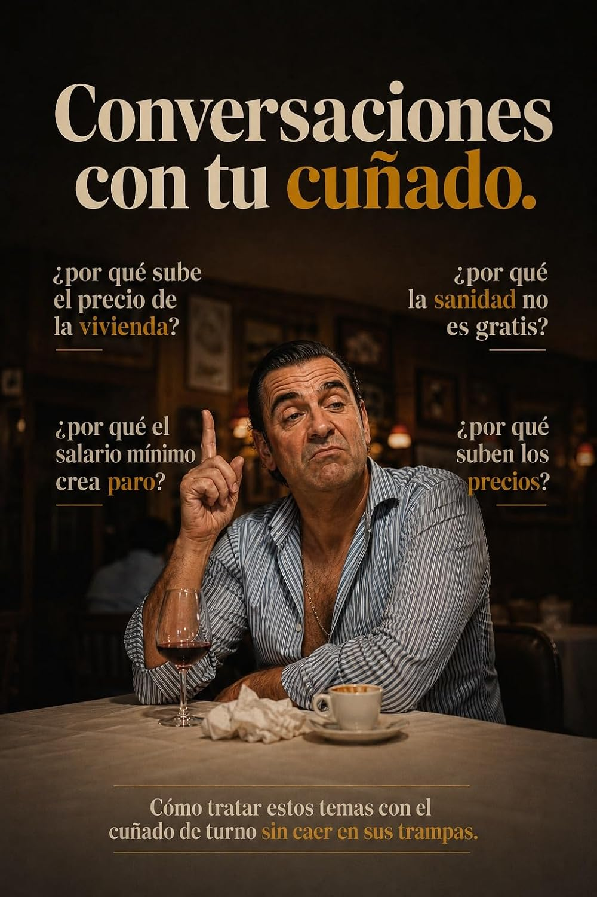
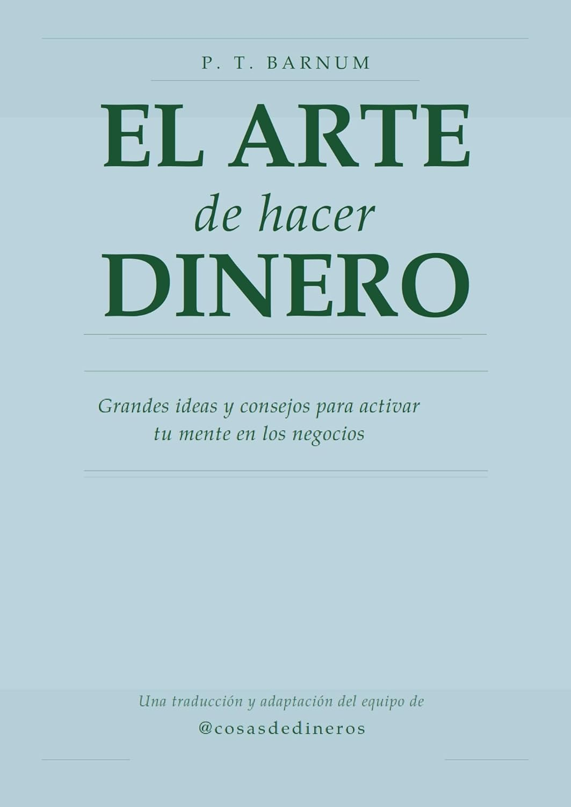
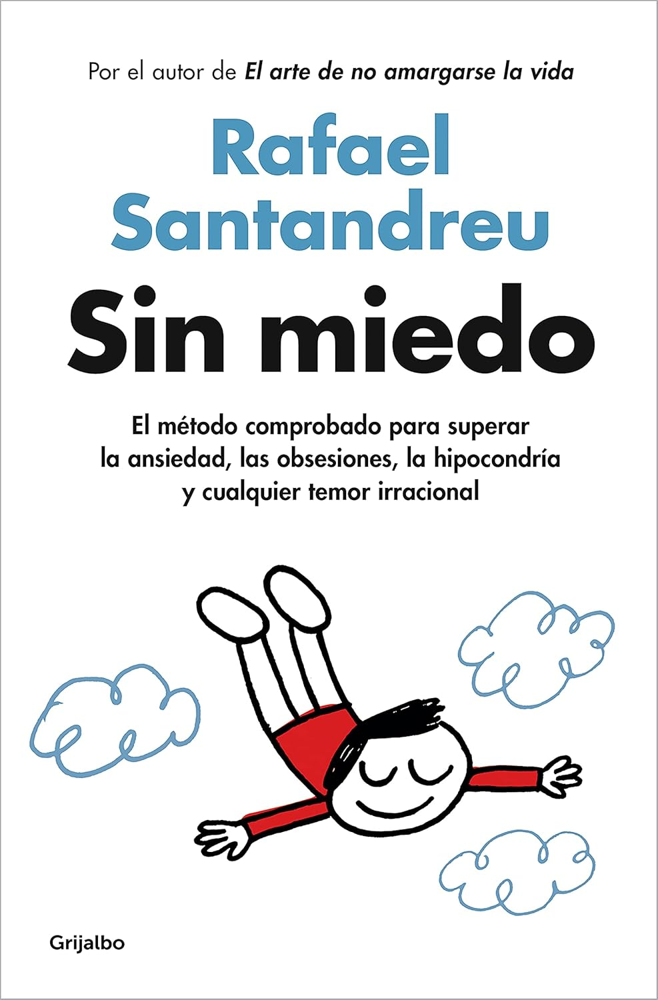
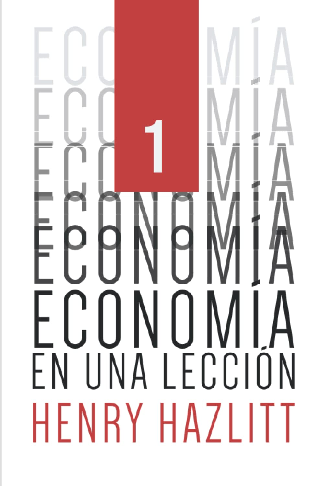
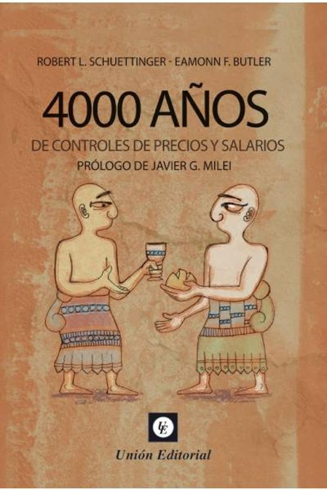
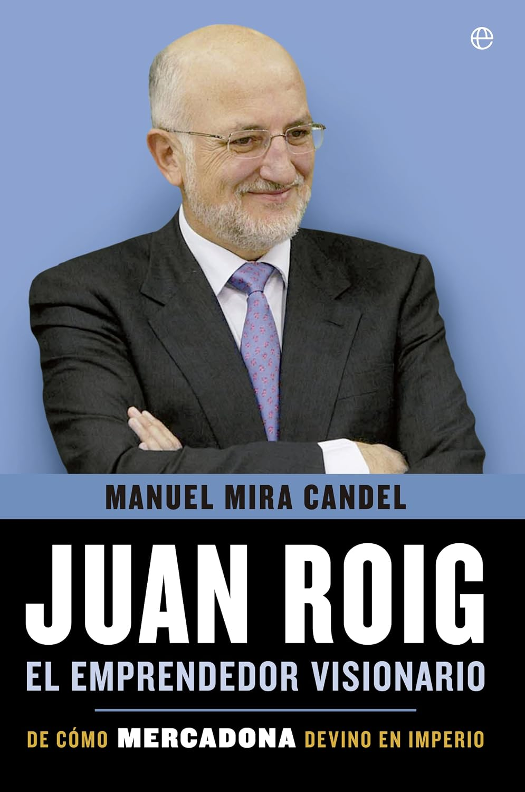
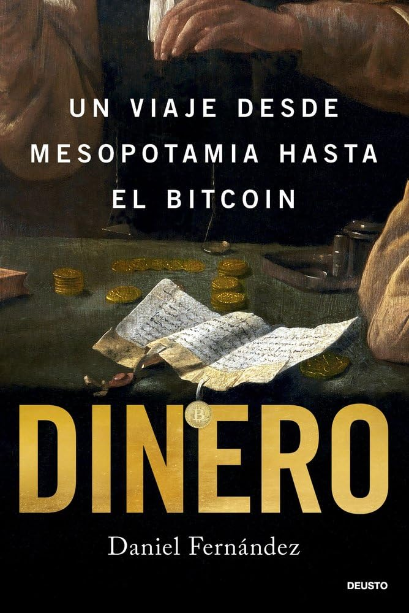
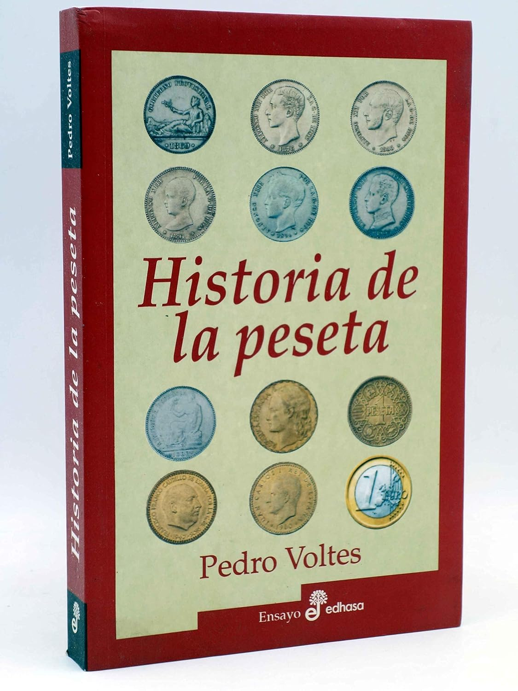
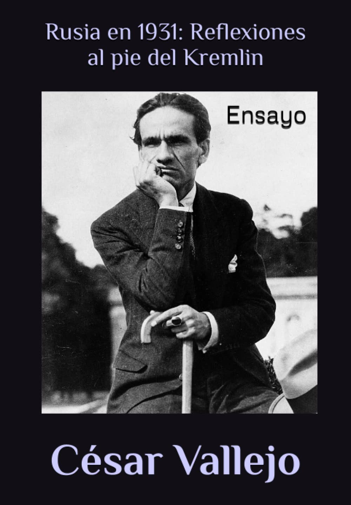

Algunos son tostón pero creo interesante leerlos para aprender cosas útiles.
Todos son links referenciados, así que si los compras desde aquí me llevo unos céntimos (literalmente) sin que a ti te cueste más y eso se agradece.
Si hay algún libro que tengas la duda de si merece la pena o no, escríbeme y me lo apunto en la lista, una vez leído te digo qué tal.
Mis libros
Finanzas para mi hermana — todo lo que necesitas saber sobre inversión sin el cuento chino de los bancos.
📖 Comprar en Amazon
Conversaciones con tu cuñado — ¿cansado de escuchar en cenas de Navidad y comidas familiares al típico que cree saberlo todo?
¿Quieres conocer la verdad de los asuntos más recurrentes? Por qué suben los precios, por qué los sindicatos no son tus amigos, por qué hay países pobres, por qué la vivienda está tan cara...son temas que aquí se tratan y que podrás rebatir con cualquiera (sin ser un pedante).
📖 Comprar en AmazonLibros traducidos y adaptados
Estos son libros que he traducido al español y en algunos casos he incorporado aclaraciones de cosas que eran muy técnicas y en otro caso las he borrado porque no aportaban.

El arte de hacer dinero de P.T. Barnum — Grandes ideas y consejos para activar tu mente en los negocios. Está publicado en 1880 así que hay que leerlo con los ojos de esa época. Es un libro que me pareció interesante aunque no es ninguna pócima mágica para hacerse millonario.
📖 Comprar en AmazonDelirios Populares Extraordinarios y La Locura de Las Masas — Este libro de 1841 nos habla de las burbujas del pasado. La crisis de los tulipanes, la de los Mares del Sur...habla con mucho detalle y nos permite ver situaciones en común con la bolsa en nuestros tiempos.
📖 Próximamente en Amazon, clica aquí para leer las primeras páginas gratis.Psicología para el dinero
Lo más importante en inversiones es el mantenerse tranquilo y frío y en caso de liarla o perder dinero saber retomar el control de tu mente y no hundirte.
El aceptar pérdidas, a estar positivos y muchas cosas más que podrás leer en los libros que te dejo aquí abajo.

Sin miedo — Me he leído todos los libros de Rafael Santandreu y es verdad que está enfocado a las relaciones personales y a superar miedos, pero a mí me ha servido para aplicar todo eso al mundo de las inversiones.
Sin duda es un manual que se puede leer cada 2 años y aunque no hace magia sí que ayuda muchísimo en cosas como el autocontrol y el desarrollo de la inteligencia emocional.
📖 Comprar en Amazon
Economía y finanzas

Economía en una lección – Henry Hazlitt — Este libro habla de economía, de cómo funcionan los mercados, los precios... es un libro leíble por todos y si lo encuentras muy técnico tómatelo como un desafío y sigue adelante. No es un tochaco, es leíble y vas a aprender cositas.
📖 Comprar en Amazon

4000 años De Controles De Precios y Salarios - Robert L. Schuettinger y Eamonn F. Butler — El primer libro que se va leer mi hijo. Ejemplos claros y simples de cómo revientan la vida a las personas el control de precios.
📖 Comprar en Amazon
La Fatal Arrogancia - Hayek — Todo lo que escribe este hombre es oro. Expone cómo los políticos al creerse suporiores instalan normas y regulaciones que lo que hacen es la vida más difícil al ciudadano. Muestra que al final lo mejor es no intervenir y dejar que la gente se relacione y comercie libremente.
📖 Comprar en Amazon

Juan Roig, el emprendedor visionario - Manuel Mira — Creemos que Mercadona compra las patatas al agicultor, les da un agua, y las vende con un +400% de rentabilidad. Con este libro vas a alucinar conociendo cómo funciona Mercadona y el nivel de tecnología y logística que hay detrás de cada producto. Explica cómo funciona la empresa por dentro dando multitud de detalles.
📖 Comprar en Amazon
De Cero a Inversor en ETFs - Luis Angel Hernández Bernia — Para los que queráis entrar en profundidad en el mundo de los ETF os dejo este manual con vídeos y cláses prácticas para que no os dejéis nada.
📖 Comprar

Dinero: Un viaje desde Mesopotamia hasta el Bitcoin - Daniel Fernández Méndez — Ronda las 400 páginas, pero si te interesa el mundo de finanzas y economía este libro es estupendo. Habla de cómo se empieza a desarrollar el dinero , de cómo surge la inflación (cómo mezclan plata con otros metales) y cómo va evolucionando la banca a lo largo de cientos de años. Lo junta con introducciones al principio de los capítulos sobre la historia y el conexto cultural en ese momento. Una mezcla muy buena.
📖 Comprar en Amazon

Historia de la peseta - Pedro Voltes Bou - Puede ser un libro un poco denso y con mucho detalle, pero es interesante ver cómo evoluciona nuestra famosa moneda y cómo lo hace en el contexto social. Cuenta curiosidades como de dónde viene el nombre o triquiñuelas que se hacían para estafar a la gente con la moneda falsificada (había que morderla para asegurarse de que era de plata u oro). No es la leche pero está muy curioso.
📖 Comprar en Amazon

Rusia en 1931: Reflexiones al pie del Kremlin - César Vallejo - Describe la vida rusa después de La Revolución. Parece un poco de propaganda porque lo define todo como si fuera perfecto. Es curioso ver las expectativas que tenían por ese año y cómo acabó la cosa. Su contenido a nivel de finanzas es bajo pero es interesante ver cómo describe como desaparecen los nobles (y cómo venden sus lujosas ropas a pie de calle) y cómo se socializa toda la producción.
📖 Comprar en Amazon